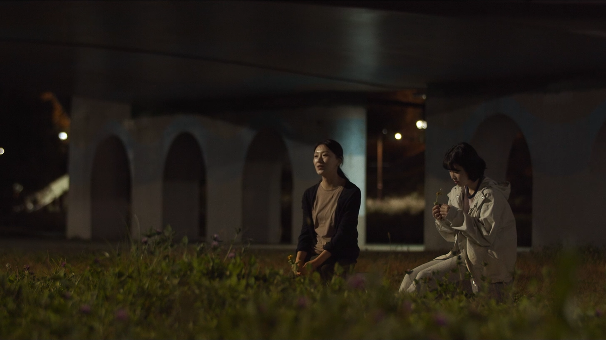

Password: urbandiary
When a high school girl is left alone in her apartment after her stay-at-home father returns to work, her quiet routine unravels into a haunting meditation on absence, loneliness, and the fragile rhythms of family life in the city.
Urban Diary is an 18-minute short film co-directed by Jonghoon and Kosan, based on a poem written by the high school student character, Min-hae. The story quietly observes the rhythms of a family's daily life in the city: a stay-at-home father, a mother who teaches at a private academy, and their teenage daughter.
One day, when the father begins working again, Min-hae is left alone at home, a shift that quietly unveils her fear of abandonment and the weight of loneliness. The film transforms Min-hae's poem into moving images, where absence feels like death, and a quiet house becomes haunted by what is no longer present.
